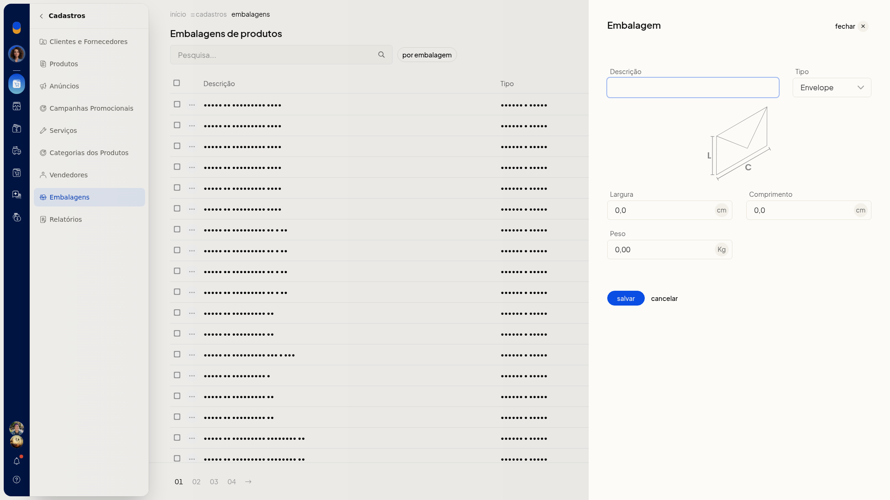

Embalagens
No ERP da Olist, você consulta as embalagens do cadastro de produtos e inclui novas embalagens com tipo, largura, comprimento e peso. A lista fica em Cadastros > Embalagens e também permite pesquisar e filtrar por embalagem.
Pré-requisitos
- Se a opção não aparecer para você, peça acesso ao administrador da conta.
Instruções
-
Acesse Cadastros > Embalagens.
-
Na lista, use a pesquisa ou o filtro por embalagem para localizar um cadastro. As linhas mostram Descrição, Tipo, dimensões e peso.

-
Clique em Incluir embalagem.

-
Informe Descrição. O campo não é obrigatório.
-
Selecione Tipo: Envelope, Pacote / Caixa ou Rolo / Cilindro. O campo não é obrigatório.
-
Informe Largura em cm, com vírgula decimal. O campo não é obrigatório.
-
Informe Comprimento em cm, com vírgula decimal. O campo não é obrigatório.
-
Informe Peso em Kg, com vírgula decimal. O campo não é obrigatório.
-
Clique em Salvar para gravar a embalagem.
Informações adicionais
Embalagens dos Correios
Na lista, Criar embalagens Correios inicia a criação de embalagens dos Correios.